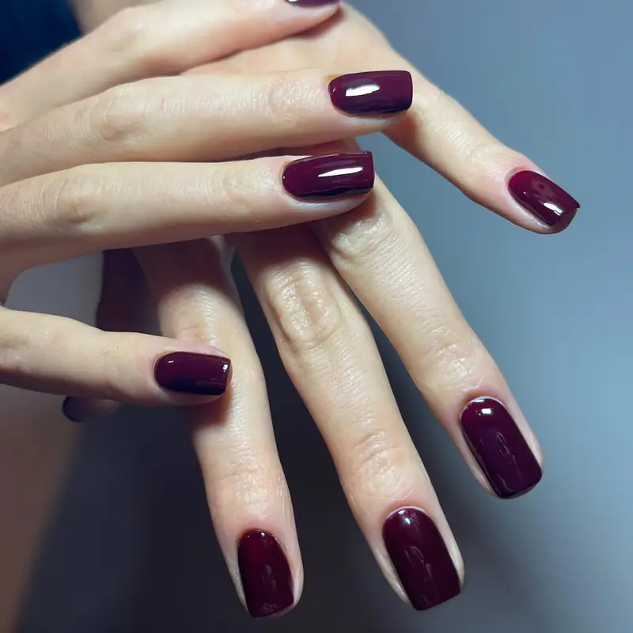

Güzelbahçe kalıcı oje ve Güzelbahçe protez tırnak arıyorsanız Fleura Nails, İzmir'in sahil bölgesindeki Güzelbahçe ilçesinin tüm mahallelerine VIP ev hizmeti sunar. Yazlık dönemler ve sahil yaşamı için özel bakım protokolleriyle yanınızdayız.

Güzelbahçe'de Hizmet Verdiğimiz Mahalleler
Yazlık ve Sahil Yaşamına Uygun Tırnak Bakımı
Güzelbahçe, İzmir'in en geniş sahil şeritlerinden birine sahip. Müşterilerimiz çoğunlukla sahile yakın yaşıyor, yazlıklarında zaman geçiriyor. Bu nedenle uygulamalarımızda tuz, güneş ve klor dayanıklılığı yüksek ürünleri tercih ediyoruz.
Yüzme sezonu boyunca kalıcı ojenin parlaklığını koruyabilmek için her uygulama sonrası size özel plaj bakım kiti önerileri sunuyoruz: SPF içerikli el kremi, koruyucu top coat ve plaj sonrası tatlı su durulama rutini.
Güzelbahçe için Özel Hizmetlerimiz
- Yazlık ev randevusu: Tatil süresince yazlığınızda haftalık bakım planı.
- Düğün gelin hazırlığı: Güzelbahçe'deki sahil/marina düğünleri için özel paket.
- Aile grup randevusu: Anne, kız, gelin için aynı evde arka arkaya seans.
- SPF korumalı kalıcı oje: Güneşe dayanıklı, sararmayan formüller.
- Plaj sonrası onarım: Yüzme sonrası tırnak güçlendirme bakımı.
Neden Güzelbahçe'de Fleura Nails?
- Yazlık bölgesine özel ulaşım planlaması ve dakik randevu.
- Sahil yaşam stili için özel bakım önerileri.
- Otoklav sterilizasyon — tıbbi standartta hijyen.
- Premium ürünler (OPI, CND, Kodi) ile uzun ömür.
- Komşu Narlıdere ve Balçova'dan transfer kolaylığı.
Güzelbahçe Randevusu Alın
Yazlık veya daimi adresinize uygun saat planlaması için WhatsApp üzerinden yazın.
İlgili hizmetler: Narlıdere tırnak · Balçova protez tırnak · İzmir kalıcı oje · Fiyatlar
Sık Sorulan Sorular
Yazlık eve geliyor musunuz?
Evet — Güzelbahçe yazlıklarına ve daimi adreslere aynı standart hizmeti sunuyoruz.
Düğün öncesi tırnak hazırlığı yapıyor musunuz?
Evet, sahil/marina düğünleri için gelin tırnak paketi sunuyoruz. Tasarım, deneme uygulaması ve düğün günü dahil.
Plaj sonrası protez tırnak ayrılır mı?
Doğru bakımla 3-4 hafta dayanır. Yüzme öncesi koruyucu krem ve sonrasında tatlı su durulama kritik. Detaylı plaj bakım önerilerimizi uygulama sonrası paylaşıyoruz.